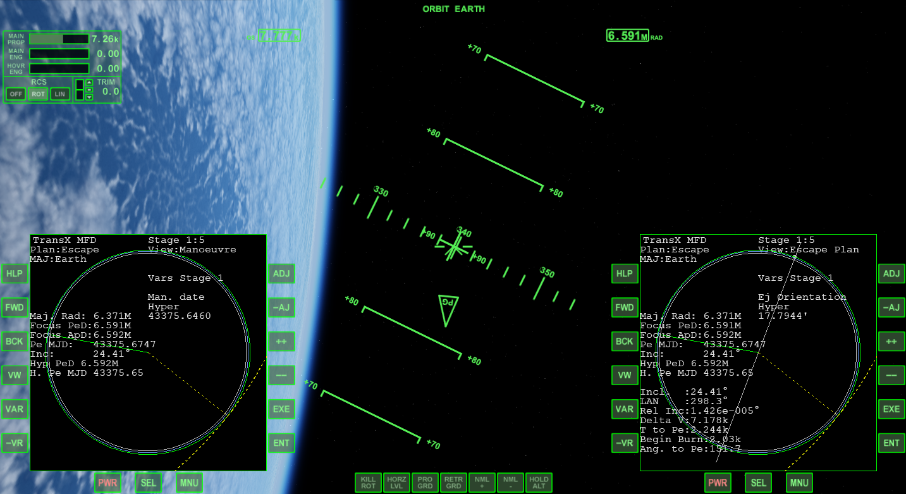
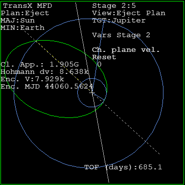
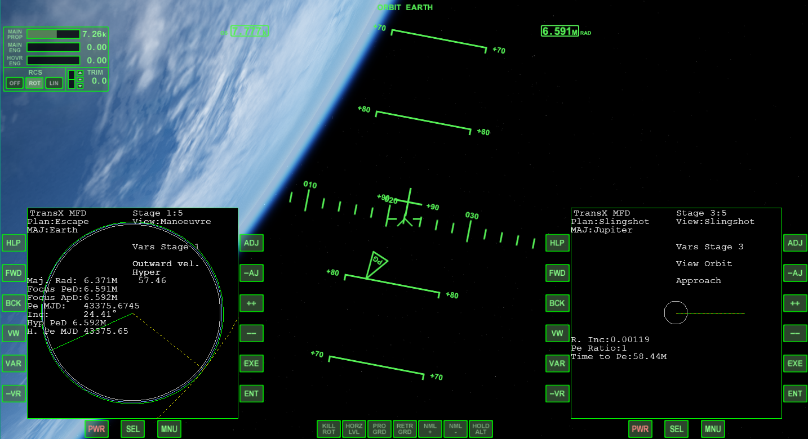

前回作成したフライトプランをもとに、木星へと向かうマニューバを作成します。
打ち上げからパーキング軌道までは、ほかの惑星へ直接向かう場合とまったく同じ。
Orbiterチュートリアル Part20 金星への打ち上げ・パーキング軌道へ
パーキング軌道へ到達したら、Stage1でマニューバを作成する。
View:Escape Planに表示されたDelta Vの値を、View:ManoeuvreのProgradeに入力。
Man. dateを操作して、ふたつの黄色い曲線が重なるようにする。

Stage2に移動して、View:Eject Planのすべての項目をResetする。

ここまでの手順は、ほかの惑星へ向かうときとまったく同じ。
片方のMFDでStage1のView:Manoeuvreを表示する。
もう片方はStage3のView:Slingshotを表示する。

Stage1のマニューバを操作して、Stage3で緑と黄色の線が重なるようにする。
Prograde、Outward、Ch. planeを変更して、緑の線の長さと角度を変える。
プランの作成と同じように、R. Incを0に、Pe Ratioを1にできるだけ近づける。※
※TransXの計算には誤差があり、かつ手動で微調整できるので、細かい数字にこだわる必要はない
Stage4とStage5に移動して、土星に衝突する軌道にする。
Outward angleとInc. angleを操作する。
終わったらStage1とStage3に戻って、マニューバを微調整する。
何度か++ Updatesを使って再計算するのを忘れないように。
マニューバの調整が終わったら、View:Targetを使ってエンジンを噴射する。
噴射が終わったら、Stage3を見ながら手動で微調整する。
木星までの移動のあいだに、何度か軌道修正をおこなう必要がある。
軌道修正のためのマニューバの作り方は、さきに述べた方法とまったく同じ。
移動するにつれてStageが順番に消去されるので、Stageの番号が変わる。
今回は木星スリングショット→土星までのプランしか作成しなかったが、木星を離れてから土星から天王星までのStageを追加することができる。
Stageの追加方法は、地上で木星→土星までのプランを作成したときと同じ。
これを繰り返すことで、木星・土星・天王星・海王星を一度のフライトで訪れることができる。